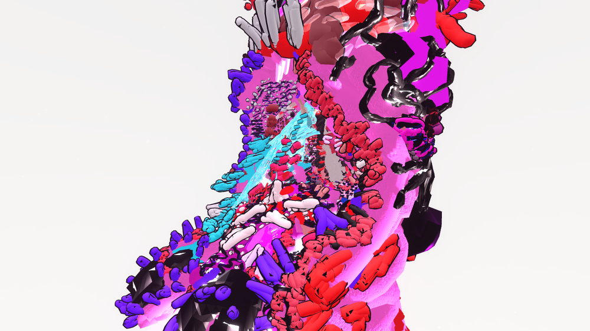
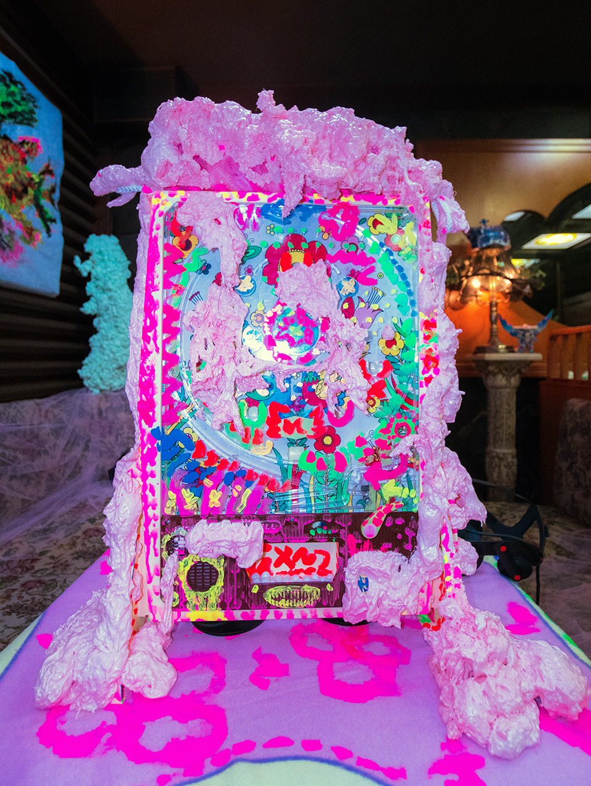
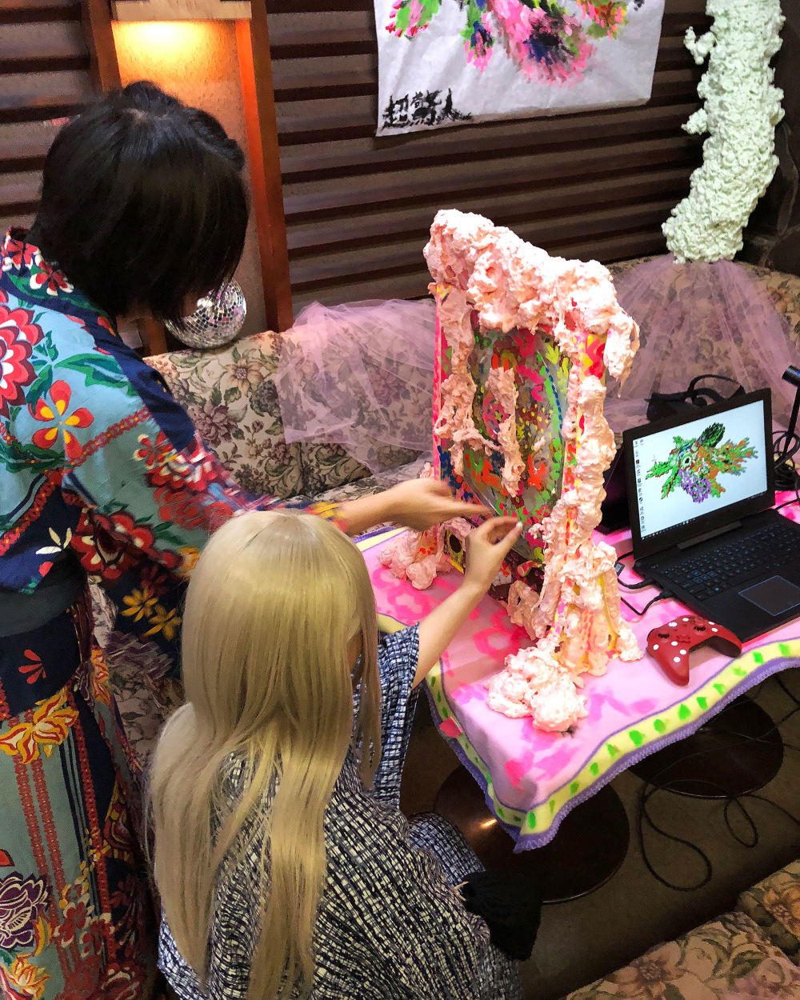

Hyperbation: Pachinko，全景海報，松戶，日本，2018
Hyperbation: Pachinko，全景海報，松戶，日本，2018
パチンコ / PACHINKO
“昔々、六匹の千葉の鬼は松戸にある若松喫茶店の貯蔵室でのパチンコに封印されていた。ある日、盆踊りの際、来客が偶然に鬼をそのパチンコから解放してしまった。それで、力が戻った鬼は逃げて、来客を小さなパチンコ玉に変身させてしまった。”'
あなたは、ひとりの不運な来客として、そのパチンコ玉をコントロールしながら、六匹の鬼を打たなければならない。最後に、ジャックポットが当たったら、人間として現実の世界に戻れる。
「ハイバーベーション パチンコ」とは松戸の当地アート活動と日本におけるパチンコ文化に基づいた仮想現実パチンコゲームである。このゲームは空間に関する実験を通して、「Gamification」と「Hyperization」と「Hyperlocalization」の概念を探究することを目的している。
"Long long ago, there were six horrible ghosts in Chiba locked (封印, フウイン) inside an old pachinko machine and stored in the storage room of Wakamatsu Cafe, Matsudo. One day during the Bon Festival, the drunk visitors accidentally unlocked the pachinko machine. The powerful ghosts escaped and transformed the visitors into small pachinko balls. "
As one of the unlucky visitors, you need to control the ball to hit the six ghosts as well as the final jackpot to become human again and back to the real world…
Hyperbation Pachinko (超驚人 ハイパーベーション パチンコ) is a VR pachinko game based on Matsudo local art activity and Japanese pachinko culture as part of the ongoing spatial experiment for gamification (超遊戲化), hyperization (超鏈接化) and hyperlocalization (超本地化).
展覽公告 / Exhibition News: http://paradiseair.info/news/2018/08/24/8514
 Junpei Playing VR Pachinko，Photograph，by Paradise Air，松戶，日本，2018
Junpei Playing VR Pachinko，Photograph，by Paradise Air，松戶，日本，2018
超驚人 ハイパーベーション : PACHINKO パチンコ extra!，全景視頻，松戶，日本，2018（備用鏈接：veer212171）
Hyperbation: Pachinko 1: Jackpot，Screenshot，松戶，日本，2018
 Hyperbation: Pachinko 2: Opening，Photo，松戶，日本，2018
Hyperbation: Pachinko 2: Opening，Photo，松戶，日本，2018
Hyperbation: Pachinko 3: Pachinko Machine Detail，Photo，松戶，日本，2018
 Hyperbation: Pachinko 4: Watch for issuing Gift Tracker，Photo，松戶，日本，2018
Hyperbation: Pachinko 4: Watch for issuing Gift Tracker，Photo，松戶，日本，2018
Hyperbation: Pachinko 5: Playing Old Pachinko，Photo，松戶，日本，2018
 Hyperbation: Pachinko 6: Transforming into virtual pachinko ball，Photo，松戶，日本，2018
Hyperbation: Pachinko 6: Transforming into virtual pachinko ball，Photo，松戶，日本，2018
 Hyperbation: Pachinko 7: Playing New VR Pachinko，Photo，松戶，日本，2018
Hyperbation: Pachinko 7: Playing New VR Pachinko，Photo，松戶，日本，2018
 Hyperbation: Pachinko 8: Gift Trackers，Photo，松戶，日本，2018
Hyperbation: Pachinko 8: Gift Trackers，Photo，松戶，日本，2018
 Hyperbation: Pachinko: Monsters，Sketchfab AR 模式截圖，松戶，日本，2018
Hyperbation: Pachinko: Monsters，Sketchfab AR 模式截圖，松戶，日本，2018
 Hyperbation: Pachinko 9: Pachinko monster food，Photo，松戶，日本，2018
Hyperbation: Pachinko 9: Pachinko monster food，Photo，松戶，日本，2018
Hyperbation: Pachinko: Monsters，三维模型，松戶，日本，2018
（某些影像作品需要翻墙 / Some hyperlinks might not work in certain countries）